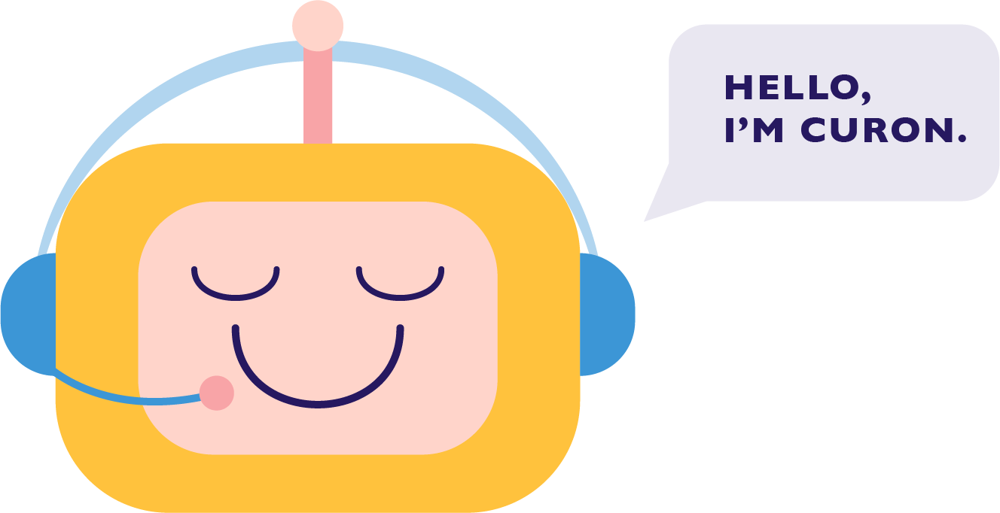
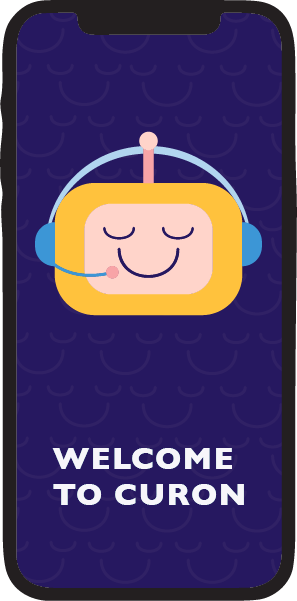

CurOn is a therapy on demand mobile app that offers coaching and therapy sessions 24/7. CurOn provides six types of therapy, these being: coaching, mindfulness based cognitive therapy, cognitive behavioral therapy, compassion focused therapy, culturally sensitive therapy, and solution focused brief therapy. The purpose of this service is to make therapy accessible and affordable to all. Curon uses artificial intelligence technology to learn from real therapists in order to provide a safe place for users to learn, talk, and chat. Curon focuses on using natural language by processing and determining direct responses to simulate conversation, remember past sessions, and deliver informed advice on mental health. Curon uses computer language techniques to learn from informative conversations that previously occurred and to provide therapeutic encounters that are psychologically related, responsive to a person’s state of health and utilizing tools from cognitive, behavioral, and interpersonal disciplines.
Curon uses artificial intelligence technology to learn from real therapists in order to provide a safe place for users to learn, talk, and chat. Curon focuses on using natural language by processing and determining direct responses to simulate conversation, remember past sessions, and deliver informed advice on mental health. Curon uses computer language techniques to learn from informative conversations that previously occurred and to provide therapeutic encounters that are psychologically related, responsive to a person’s state of health and utilizing tools from cognitive, behavioral, and interpersonal disciplines.
 Coaching
Coaching
 Compassion Focused
Compassion Focused
In the early years, people believed that only humans' physical bodies could become ill but not their minds. Mental illnesses were not acknowledged as a disorder but rather related to spirituality. Nowadays, although there is still a stigma around this topic, mental illness is no longer seen as something from the supernatural world and more awareness has been raised around this topic day by day.
Galen and Hippocrates explore the link between mental state and medicine, rejecting beliefs that medical conditions stemmed from supernatural influences.
Paracelsus (1493-1541), was one of the few physicians to advocated for the use of psychotherapy. He called for the humane treatment of the mentally ill (but was ignored for several centuries). He did not see them as possessed by evil spirits, but merely 'brothers' ensnared in a treat able malady."
Austrian physician Franz Anton Mesmer (1734-1815), treated patients by using hypnosis and received some of the earliest recognition as a founder of psychotherapy. Around the same time, French physician Philippe Pinel (1745–1826) was credited with founding the field of psychiatry.
Walter Cooper Dendy (1794-1871) introduced the term “psycho-therapeia” as he gained insight during his studies of the psyche and dreams.
Freud and Breuer co-authored “Studies on Hysteria” in and are credited with formally founding psychoanalysis.
Carl Rogers continued the work of Freud’s successors and created the person-centered therapy approach.
Aaron T. Beck had further expanded psychotherapy modalities by developing cognitive therapy, which led to what we know today as cognitive behavioral therapy (CBT).
October 10th becomes internationally known as the World Mental Health Day-the result of a global advocacy and awareness program started by the World Federation for Mental Health in 1992.
CURON
Alyssa is a 22-year-old student that relies on financial aid to pay for college. Although Alyssa works part-time for the school, she does not have financial means to afford taking care of her mental health. Alyssa suffers from moderate anxiety, mild stress and moderate depression, when Alyssa finds out about Curon she gets super excited because therapy session are affordable (only $9.99 per month) and with her busy schedule being able to open the application at any time and get the help she needs was just what the support she needed to get through school.
Amir is a 27 year old Software engineer working full time job, with a wife at home still in college and a 1 year old baby to take care of. He is the only source of income and suffers from psychosocial stress due to many family issues. He can barely support his family and constantly has the urge to smoke cigarettes, which has affected both his mental and physical health. He finds out about the Curon app from one of his colleagues and gives it a try because he doesn’t have to take out time especially for a therapy session with a professional. He took advantage of the culturally focused therapy which helps him deal with the psychosocial stress.
Imagine a world where everyone can feel supported, heard, and understood. Imagine a world where whenever people need someone to vent or to talk to they know where to go. Imagine a world where you have access to therapy and counselling anywhere and at anytime. This world is possible, this is Curon. Our mission is to create a service that can bring people self-knowledge, love, and cure. Battling mental illnesses alone can be difficult and no one should have to do it alone. We all need help to get better. Curon is here for you.
Our mission is to make mental health accessible to all.
Anywhere, whenever needed, Curon will will be there for you.
Ivete is a UI/UX designer who graduated from San Jose State University in 2022. She has always been interested in technology and how it can impact lives positively and negatively. In 2021, amidst the pandemic and struggles, she started being aware of her own mental health and thinking about how affordable and accessible therapy could help her and others during those times. In 2025, Curon is born. Ivete is one of the creators of Curon.
Sakina is a graduate of San Jose State University in 2023 as a UI/UX designer. Sakina has always been interested in how technology can affect human health to make them feel good. As the years progressed and she experienced a lot of mental health issues because of the pandemic in her family life she started to focus on how there can be a friend to help those who are going through similar problems.